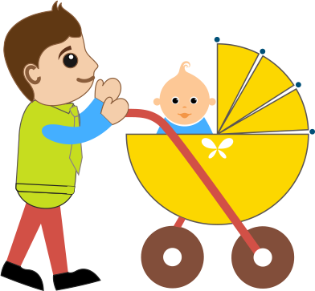
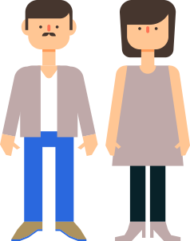
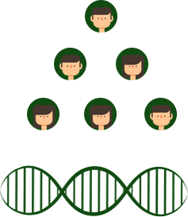

求助人兰可寻找自己失踪了25年的弟弟
25年前，年仅6岁的弟弟走失了，从此改变了原本幸福的家庭。父亲多年寻找兰可的弟弟，却一直渺无结果。父亲临终前跟兰可说不要再找了，但兰可为了让父亲安息，更加迫切地寻找着弟弟。
兰可通过家基因平台，将自己的基因信息上传，经过2年时间寻亲和等待，终于在今年春天的一个早晨，收到家基因发来的亲人联络信息。在兰可的基因图谱中，同胞级别出现了一个点。后经司法鉴定检测，确定就是她的弟弟。

被拐儿童顺利回家
两年前，小男孩冬冬和两个姐姐正在玩耍，被一个中年妇女以买东西哄骗走，之后就再没回来。家长苦苦找寻十几年，到现在没有任何音讯。
后来冬冬的母亲通过家基因平台，将自己的基因信息上传，经过1年时间的等待，公安机关发现了一个乞讨儿童并将他的基因信息上传平台，最终成功在平台上匹配上了亲人信息，经司法鉴定该乞讨儿童就是被拐走的冬冬。

怀疑医院抱错儿童，父子亲子鉴定
张先生有一个其乐融融的幸福三口家庭，只是随着儿子渐渐长大，总被人说和长得和张先生夫妇都不像。后来了解到儿子出生的当天，同一产房还有一个男婴出生，张先生总是怀疑是不是医院抱错了孩子。
这件事在张先生心里一直别扭着，但又不好意思张扬。后来张先生听人介绍，把自己的基因信息和儿子的基因信息上传，结果报告中张先生与儿子显示为亲子关系。看到这样的结果，张先生终于可以放心了。


全家人上传，构架家族基因图谱
福建人阿三，家族人口众多，父亲还有兄弟在海峡对岸的台湾，阿三了解到家基因平台可以帮助构建家庭成员的基因关系，包括父子、母子、叔侄等关系，于是先检测了自己和妻子孩子的家基因信息，并上传，很快构建了一家三口的基因图谱，之后，又邀请父母和自己兄妹及对岸的亲戚提供唾液，最终获得了一个很全面的家族基因图谱。